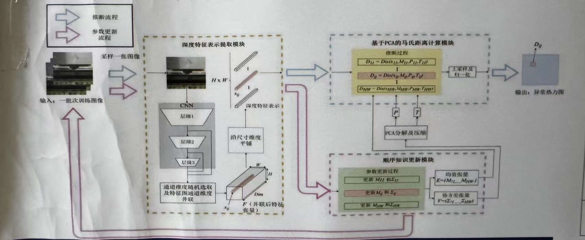

轨道交通站台安全乘降全时安全信息感知系统是国家十三五重点研究项目，旨在解决轨道交通站台区域的安全监测问题，为自动驾驶和智慧轨道交通发展提供技术支撑。
随着城市化进程的加速和轨道交通网络的不断扩展，轨道交通系统的安全性和运营效率成为关注焦点。传统的站台安全监测系统存在功能碎片化、覆盖不全、精度不足等问题，难以满足现代轨道交通发展的需求。
本系统利用先进的机器视觉技术，研究多维度信息辅助下的检测方法，实现了站台区域的全时空安全信息感知。系统采用深度学习算法，能够准确识别各类异常情况，为轨道交通系统的安全运行提供可靠保障。
系统已在广州地铁、深圳地铁、佛山地铁、珠三角城际等多个轨道交通项目中成功应用，显著提升了站台区域的安全监测水平，为乘客安全乘降和列车运行安全提供了有力保障。

科技支撑计划
系统具备全面的安全监测功能，覆盖轨道交通站台区域的各个场景，实现全时空安全信息感知。
站台门打开时，系统能够实时检测进出列车的客流量，统计乘客数量，为运营调度提供数据支持。
系统能够识别乘客的异常行为，如奔跑、拥挤、跌倒等，及时发出预警，防止安全事故发生。
站台门关闭后，系统能够检测列车与站台门之间的异物，并识别异物种类，为处理决策提供依据。
系统提供1920*1080分辨率或更高的实时图像，全面覆盖乘降作业监督区域，确保无盲区监测。
系统能够可视化显示站台门与列车车门之间的风险间隙及轨行风险区域的情况，直观呈现安全状态。
系统实现了站台门与列车间区域的全时空安全信息感知，包括列车不在站时站台门及轨行区异物的检测。
系统采用先进的技术方案，具备高性能、高可靠性和高适应性，能够满足各类轨道交通场景的需求。
系统提供1920*1080分辨率或更高的实时图像，确保监测画面清晰细致，能够捕捉到微小的异常情况。
系统最小可检测的异物尺寸为5mm，能够识别各类微小异物，确保站台区域的安全。
系统响应时间小于200ms，能够快速检测和识别异常情况，及时发出预警信息。
系统完全覆盖乘降作业监督区域，包括站台门区域、列车与站台门之间的间隙以及轨行区，实现全方位监测。
由高清摄像头、激光传感器等组成，负责采集站台区域的视频和数据信息。
采用高性能计算平台，运行深度学习算法，对采集的数据进行实时分析和处理。
运用人工智能算法，实现异常行为识别、异物检测、客流量统计等智能分析功能。
提供直观的可视化界面，展示监测结果、预警信息和统计数据，支持远程监控和管理。
系统具有多项技术优势，能够有效解决传统安全监测系统的不足，为轨道交通系统的安全运行提供全面保障。
系统实现了站台门与列车间区域的全时空安全信息感知，避免了轨道交通系统功能碎片化。
系统最小可检测的异物尺寸为5mm，能够识别各类微小异物，确保站台区域的安全。
系统采用深度学习算法，能够智能识别各类异常情况，为处理决策提供依据。
系统能够可视化显示站台门与列车车门之间的风险间隙及轨行风险区域的情况，直观呈现安全状态。
系统全面支撑自动驾驶及未来智慧轨道交通信息发展的需求，为轨道交通系统的智能化升级提供技术支持。
系统可以与其他轨道交通系统进行集成，实现信息共享和协同工作，提升整体运营效率。
系统采集的数据可以进行深度分析，为运营决策提供数据支持，优化资源配置。
系统已在多个轨道交通项目中成功应用，具有广阔的市场前景和推广价值。
如果您对我们的轨道交通站台安全乘降全时安全信息感知系统感兴趣，或者有任何问题，请随时与我们联系。
广州市天河区广汕二路602号5栋408房
13512758806
13512758806@126.com
www.gzsrdz.cn
周一至周五: 9:00 - 18:00
专业团队，7×24小时响应